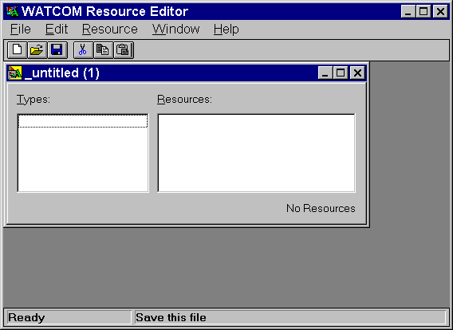
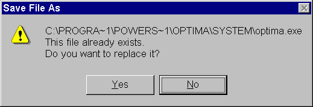
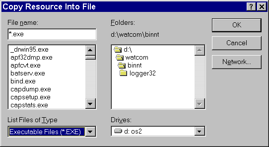
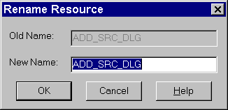

Index of Topics
- - C -
- Copying Into an Existing Resource File
Creating a New Resource
Creating a New Resource File with the Resource Editor
- D -
- Deleting a Resource
- E -
- Editing an Existing Resource
- O -
- The Open Watcom Resource Editor
Opening an Existing Resource File with the Resource Editor
- Q -
- Quitting the Resource Editor
- R -
- Renaming a Resource
The Resource Editor Menu Bar
The Resource Editor Toolbar
Resource Editor: Changing Memory Options
Resource Editor: Save
Resource Editor: Save As
- S -
- Saving a Resource
Saving a Resource File with the Resource Editor
Saving to a New Resource File
Saving to an Existing Resource File
Starting the Resource Editor
- U -
- Using Shortcuts to Create a Resource
Using the Open Watcom Resource Editor
- W -
- Working with Resource Files
Working with Resources
The Open Watcom Resource Editor
The Open Watcom Resource Editor is a full-featured editor that enables you to easily create and edit resources and the
files that contain them. A file containing one or more resources will generally be referred to as a resource file.
A resource file may be an executable (.EXE), resource file (.RES), dynamic link library (.DLL), bitmap file (.BMP),
cursor file (.CUR), or icon file (.ICO). The editor also supports a variety of resource scripts. They include
dialog (.DLG), accelerator (.ACC), menu (.MNU), and string (.STR) scripts. This support is accomplished by maintaining
a synchronized resource file (.RES) in the same directory as the resource script. Opening a resource file reveals a
Resource window in the Resource Editor window. This window is a visual representation of the resource file.
A resource is a piece of data with a specific format that Windows uses to create the visual and interactive elements
of your application. Most of the visual aspects of Windows applications are the result of the application having resources,
all of which can be created using the Open Watcom Resource Editor. Use the Resource Editor to create and edit the following
resource types:
- Accelerators
- Bitmaps
- Cursors
- Dialogs
- Icons
- Menus
- Strings
When designing your application's user interface, the resources are separate from the application's source code.
This makes changing the user interface a simple task. Instead of accessing the application's source code, you can make
the changes directly to the resources. You can manipulate some aspects of the resources, such as the memory flags and
resource names, without invoking the resource's associated editor. Invoking the desired editor from the Resource Editor
enables you to change all aspects of the selected resource.
Different applications often use the same or similar resources, such as bitmaps, icons, dialogs, and menus.
The Resource Editor enables you to create resource files for a new application by reusing existing resources. Copying
a resource from existing applications into the new resource file makes the task of creating your user interface quick and
simple.
Using the Open Watcom Resource Editor
This section discusses the following topics:
- Starting the Resource Editor
- Quitting the Resource Editor
- The Resource Editor Menu Bar
- The Resource Editor Toolbar
Starting the Resource Editor
To start the Resource Editor, double click on the Resource Editor icon in your Windows Program Manager. The Open
Watcom Resource Editor window opens.

Figure 1. The Open Watcom Resource Editor window acts as a workspace where you work with
resources.
Quitting the Resource Editor
To exit the Resource Editor, choose Exit from the File menu of the Open Watcom Resource Editor window. If you made
changes to the current file, a message box appears prompting you to save the changes. Select Yes to save the file and
exit the Resource Editor, No to exit the Resource editor without saving the file, or Cancel to return to the Resource editor.

Figure 2. As a safety feature, a message box appears when you select Exit from the File
menu without saving a modified resource file.
The menu bar consists of the following five menus:
- File
- Open a new or existing resource file, save the current resource file, and exit the Resource Editor
Edit
- Access the clipboard functions, delete the selected resource, and set the Resource Editor options
Resource
- Open a new resource and work with existing resources
Window
- Customize the Resource Editor workspace
Help
- Access on-line help information
To see the function of a menu item, hold the mouse button and drag the cursor over the desired menu item. A description
of the item appears in the status line at the bottom of the screen. If you do not want to select the menu item, drag
the cursor off of the menu item before releasing the mouse button.
In the Open Watcom Resource Editor window, the toolbar appears below the menu bar. When the toolbar is shown, choose
Hide Toolbar from the Window menu to hide it. When the toolbar is hidden, you can display it by choosing Show Toolbar
from the Window menu.
Figure 3. You can access six Resource Editor functions from the toolbar.
The following explains the function each toolbar button performs, as well as the equivalent menu item.
- CREATE
- Create a new resource file. This is equivalent to the New item in the File menu.
OPEN
- Open an existing resource file. This is equivalent to the Open item in the File menu.
SAVE
- Save the resource file. This is equivalent to the Save item in the File menu.
CUT
- Cut the selected resource to the clipboard. This is equivalent to the Cut item in the Edit menu.
COPY
- Copy the selected resource to the clipboard. This is equivalent to the Copy item in the Edit menu.
PASTE
- Paste the resource on the clipboard to the specified resource file. This is equivalent to the Paste item in the Edit
menu.
To see the function of an item in the toolbar, position your cursor over the desired button. A description of the
button's function appears in the status line at the bottom of the window.
Working with Resource Files
In the Open Watcom Resource Editor, the items in the File menu apply to resource file. These items enable you to
perform the following functions:
- Creating a New Resource File
- Opening an Existing Resource File
- Saving a Resource File
Creating a New Resource File with the Resource Editor
Create a new resource file each time you need a file to hold a collection of resources. You can create the resources
and add them to the new file or you can copy existing resources from another file and place them in the new file.

Figure 4. Choosing New opens an untitled and empty Resource window into which you can store
resources.
To create a new resource file, choose New from the File menu in the Open Watcom Resource Editor window. An untitled
and empty Resource dialog appears on the screen. From here, you can begin adding resources to the resource file.
You can also open an existing resource file and copy selected resources to the new file. The file remains untitled
until you save it and assign it a file name.
Opening an Existing Resource File with the Resource Editor
Open an existing resource file to view the resources for that file or perform functions on the file's resources.

Figure 5. Choosing Open permits you to access resources in an existing file.
- To open an existing resource file:
-
(1)
- Choose Open from the File menu in the Open Watcom Resource Editor window.
An Open File dialog appears where you select the file you want to open.
(2)
- Double click on the desired file
or
- Click on the desired file to select it, then click on OK.
The Open File dialog closes and a Resource dialog for the selected resource file appears in the Resource Editor window.
This dialog displays a button representing each type of resource that exists in the resource file. Clicking on
the resource buttons displays a list of the resources of that type in the resource file.
From here, you can perform any of the functions in the section entitled Working with Resources.
Saving a Resource File with the Resource Editor
There are two menu items that you can use to save resource files with the Resource Editor:
- Important:
- You can have several resource files open in the Resource Editor window at one time. The caption bar of the currently
selected resource file appears highlighted. Only this window is affected when you choose Save or Save As from the File
menu.
Resource Editor: Save
Choose Save from the File menu in the Open Watcom Resource Editor window to save any changes made to the resource
file.
If the file is new and previously unsaved, refer to the section entitled Resource Editor: Save As.
After modifying individual resources, you perform an update at the resource level. The resource file and its
resources are not saved until you select Save from File menu of the Resource Editor. The Resource Editor prompts you
if you attempt to exit the editor without saving changes. Choose Yes to save the file and exit the Resource Editor,
No to exit the Resource Editor without saving the file, or Cancel to return to the Resource Editor.
Resource Editor: Save As
- To save a resource file to another file:
-
(1)
- Choose Save As from the File menu in the Open Watcom Resource Editor window to save any changes made to the resource
file.
A Save File dialog appears where you specify the file to which you want to save the current resource file.
(2)
- Specify the file to which you are saving by selecting an existing file or entering the name of a new file.
(3)
- Click on OK when completed.

Figure 6. A Save File message box appears when you attempt to save the current resource
file to an existing file.
The dialog closes and the Resource Editor saves the resource file, returning you to the Resource Editor window.
- Note:
- If you attempt to save the current resource file to an existing file, a Save File window appears informing you that the selected
file already exists. Choosing Yes on this dialog overwrites the selected existing file with the contents of the current
resource file.
The dialog closes and the Resource Editor saves the resource file, returning you to the Resource Editor window.
The dialog closes and the Resource Editor saves the resource file, returning you to the Resource Editor window.
Working with Resources
The items in the Edit and Resource menus in the Open Watcom Resource Editor window enables you to perform functions on
resources within a resource file. To use these functions, a resource file must be open in the workspace. This
resource file can be empty or can contain existing resources. The functions you can perform are:
- Creating a New Resource
- Editing an Existing Resource
- Saving a Resource
- Using Shortcuts to Create a Resource
- Deleting a Resource
- Renaming a Resource
- Changing Memory and Load Options
Creating a New Resource
From the Open Watcom Resource Editor window, you can create any of the following resources:
- Accelerator
- Bitmap
- Cursor
- Dialog
- Icon
- Menu
- String
To create a new resource, choose the type of resource from the cascading menu that appears when you choose New from the
Resource Menu. The editor for the selected resource type appears on the screen on top of the Resource Editor window.
From here, create the desired resource, referring to the appropriate editor section in this guide for more information.
Editing an Existing Resource
From the Resource Editor window, you can select any resource within a resource file and edit it by opening the editor
with which the resource was created. This makes editing resources efficient as you have access to every resource in
a resource file and you can invoke the appropriate editor quickly.
- To edit an existing resource:
-
(1)
- Select the desired resource file on the Resource Editor window by selecting the appropriate Resource window.
This is the resource file whose resource you want to edit.
(2)
- Select the resource type by selecting on the appropriate line in the type listbox.
A list of all resources of the selected type for this resource file appears in the Resource listbox.

Figure 7. Each resource type contained in the resource file appears in the Types listbox.
(3)
- Double click on the resource you want to edit
or
- Select the desired resource, then choose Edit from the Resource menu
or
- Select the desired resource, then press ENTER.
The appropriate editor for the selected resource opens on top of the Resource Editor window. Use this editor to
make changes to the selected resource.
(4)
- Refer to the appropriate editor section in this guide for information on using the editor to edit the selected resource.
Saving a Resource
The Save As menu item in the Resource menu enables you to save a resource to a new or existing resource file. Saving
a resource to an existing resource file replaces the existing resources for that resource file with the resource you are
saving. You can save only one resource at a time with this function.
- (1)
- Select the desired resource.
You can select only one resource at a time and the selected resource appears highlighted. This is the resource you
want to save to another resource file.
(2)
- Choose Save As from the Resource menu.
A Save Resource dialog appears where you specify the resource file to which you are saving the selected resource.
(3)
- Specify the file to which you are saving by selecting an existing file or entering the name of a new file.
(4)
- Click on OK when completed.
How you proceed from here depends on whether you are saving the resource to a new or existing resource file.
Saving to a New Resource File
Once you enter the name of the new resource file to which you are saving the selected resource and click on OK in the
Save Resource dialog, the dialog closes.
Saving to an Existing Resource File
When you choose an existing file from the Save Resource dialog, a Save Resource message box appears on the screen.
This message box informs you that the selected file already exists and asks if you want to replace the existing file.

Figure 8. A Save File As message box appears when you attempt to save the current resource
file to an existing file.
- To cancel the save:
-
(1)
- Choose No
The Save Resource dialog reappears.
(2)
- Select another file to which you can save the selected resource
or
- Cancel the save function
The dialog closes and the Resource Editor returns you to the Resource Editor window.
- To replace the existing file:
-
(1)
- Choose Yes to replace the contents of the existing resource file with the selected resource.
The dialog closes and the Resource Editor saves the resource file, returning you to the Resource Editor window.
Copying Into an Existing Resource File
The Copy To function enables you to copy the selected resource into an existing resource file. This does not remove
the resource from its current resource file and it does not delete the resources in the existing resource file, as in the
Save As function.
- To copy a resource to another resource file:
-
(1)
- Select the desired resource.
The selected resource appears highlighted in the Resource window. This is the resource you want to copy to another
resource file. Copying a resource does not remove it from its current resource file.
(2)
- Choose Copy To from the Resource menu.
A Copy Resource Into File dialog appears where you select an existing resource file to which you want to copy the selected
resource.

Figure 9. In the Copy Resource Into File dialog, select the resource file to which you
want to copy the selected resource.
(3)
- Double click on the desired resource file
or
- Click on the desired resource file to select it, then click on OK.
The Resource Editor copies the resource to the selected resource file. The dialog closes and you return to the Open
Watcom Resource Editor window.
- Note:
- If the resource file to which you copied the selected resource is open on the Resource Editor window, the copied resource
will not appear. To view the updated resource file, simply open that resource file again. The copied resource
now appears in the Resource window for the resource file.
Using Shortcuts to Create a Resource
The Edit menu on the Open Watcom Resource Editor window contains some standard Windows items that you can use to quickly
create resources. The items are:
These items allow you to cut or copy selected resources from one resource file, then open a second resource file and paste
them into it. You can also paste them directly into the appropriate editor.
- Cut
-
(1)
- Select the resource you want to cut to the clipboard.
The selected resource appears highlighted in the Resource window.
(2)
- Choose Cut from the Edit menu of the Resource Editor window.
The Resource Editor removes the selected resource from the Resource window and places it on the clipboard.
Refer to Paste in this section for details on pasting information from the clipboard.
- Copy
-
(1)
- Select the resource you want to copy to the clipboard.
The selected resource appears highlighted in the Resource window.
(2)
- Choose Copy from the Edit menu of the Resource Editor window.
The Resource Editor copies the selected resource to the clipboard.
Refer to Paste in this section for details on pasting information from the clipboard.
- Paste
-
(1)
- Select the resource file in which you want to paste the resource that is currently on the clipboard.
(2)
- Choose Paste from the Edit menu of the Resource Editor window.
The Resource Editor places the resource from the clipboard into the current resource file in the Resource Editor window.
Deleting a Resource
The Delete item in the Edit menu enables you to quickly delete resources from a resource file.
- To delete an object from a resource file:
-
(1)
- Select the resource you want to delete from a resource file on the Resource Editor window.
The selected resource appears highlighted in the Resource window.
(2)
- Choose Delete from the Edit menu.
or
- Press the Delete key on the keyboard.
A Delete Resource dialog box appears displaying the name of the resource chosen to delete.

Figure 10. The Delete Resource dialog prompts you to verify that you want to delete the
resource indicated.
(3)
- Click on OK to delete the selected resource.
The Delete Resource dialog closes and the Resource Editor removes the selected dialog from the Resource window.
- Note:
- Choosing Cancel on the Delete Resource dialog cancels the deletion and returns you to the Resource Editor window.
Renaming a Resource
You can change the name of a resource from either the Resource Editor or from the editor in which the resource was created.
- To rename a resource:
-
(1)
- Select the resource you want to rename.
(2)
- Choose Rename from the Resource menu in the Open Watcom Resource Editor window.
A Rename Resource dialog appears containing two fields:

Figure 11. In the Rename Resource dialog, you enter the new name of the selected resource.
(3)
- Enter the new name for the resource in the New Name field.
(4)
- Click on OK to close the Rename Resource dialog.
The dialog closes and the new resource name appears in the Resource window. The Resource Editor automatically reorders
the resources into alphabetical order.
Resource Editor: Changing Memory Options
The Memory Flags item in the Resource menu of the Resource Editor window enables you to change the memory options for
the selected resource without opening the editor for that resource. These options indicate the memory type and loading
instructions for the resource.
- To set the memory options for a resource:
-
(1)
- Select the resource whose memory options you want to change.
(2)
- Choose Memory Flags from the Resource menu in the Open Watcom Resource Editor window.
The Memory Options dialog opens displaying the current memory options for the selected resource.

Figure 12. In the Memory Options dialog, you change the memory options for the selected
resource.
(3)
- Select the required flags in the Memory Options and Load Options sections of the dialog by clicking on the check box
or radio button beside the appropriate field.
Following is a description of each option.
- Moveable
- Selecting this option marks this resource to be stored in moveable memory when it is loaded by an application.
Discardable
- Selecting this option marks this resource to be stored in discardable memory when it is loaded by an application.
Pure
- When marked as Pure, Windows does not allow the memory into which the resource is loaded to be modified.
Preload
- All resources marked as Preload are loaded when the application for which the resource is created is loaded.
LoadOnCall
- Resources marked as LoadOnCall are loaded only when an application issues a call to load them.